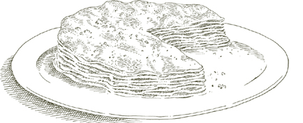

WHAT ITALIANS CALL crespelle are very thin pancakes made from a batter of milk, flour, and eggs sautéed in butter. Italians work with them as if they were pasta wrappers, stuffing them with savory meat, cheese, or vegetable fillings. A basic recipe for making crespelle is given below, but any method you are comfortable with that produces thin, plain, unsweetened crêpes is satisfactory.
16 to 18 crespelle
THE BATTER
1 cup milk
¾ cup all-purpose flour
2 eggs
⅛ teaspoon salt
FOR COOKING THE CRESPELLE
1 to 1½ tablespoons butter
An 8-inch nonstick skillet
1. Put the milk in a bowl and add the flour gradually, sifting it through a sieve if possible, while you mix steadily with a fork or whisk to avoid making lumps. When you have added all the flour, beat the mixture until it is evenly blended.
2. Add the eggs, one at a time, beating them in rapidly with a fork. When both eggs have been incorporated into the batter, add the salt, stirring to distribute it.
3. Lightly smear the bottom of the skillet with some of the butter. Turn on the heat under the pan to medium low.
4. Give the batter a good stirring, and pour 2 tablespoons of it into the pan. Tilt and rotate the pan to distribute the batter evenly.
5. As soon as the batter sets and becomes firm and speckled brown, slip a spatula underneath it and flip it over to cook the other side. Stack the finished crespelle on a plate.
6. Coat the bottom of the skillet with a tiny amount of butter, and repeat the procedure described above until you’ve used up all the batter. Remember to stir the batter each time before pouring it into the pan.
Ahead-of-time note  You can make crespelle several hours in advance, or even days. If you are doing them days ahead of time, interleave them with wax paper before refrigerating. If you are keeping them longer than 3 days, freeze them.
You can make crespelle several hours in advance, or even days. If you are doing them days ahead of time, interleave them with wax paper before refrigerating. If you are keeping them longer than 3 days, freeze them.
For 4 to 6 servings
Crespelle (thin pancakes) produced with this recipe
Béchamel Sauce, prepared as directed, using 1 cup milk, 2 tablespoons butter, 1½ tablespoons flour, and ¼ teaspoon salt
1¼ cups Bolognese Meat Sauce, prepared as described
Whole nutmeg
Flameproof ware for baking and serving
Butter for smearing and dotting the baking dish
⅓ cup freshly grated parmigiano-reggiano cheese
1. Prepare the béchamel sauce, making it rather thin, the consistency of sour cream. When done, keep it warm in the upper half of a double boiler, with the heat turned to very low. Stir it just before using.
2. After making or reheating the meat sauce, draw off with a spoon any fat that may float on the surface. Put 1 cup of the sauce in a bowl, add ¼ cup béchamel, and a tiny grating—about ⅛ teaspoon—of nutmeg. Mix well to combine the ingredients evenly.
3. Preheat oven to 450°.
4. Choose a baking dish that can subsequently accommodate all the rolled up crespelle in a single layer. Lightly smear the bottom of the baking dish with butter. Lay one of the pancakes flat on a platter or a clean work surface, and spread a heaping tablespoon of the meat sauce filling over it, leaving uncovered a ½-inch border all around. Roll up the pancake, folding it loosely and keeping it flat. Place on the bottom of the baking dish, its overlapping edge facing down. Proceed in this manner until you have filled and rolled up all the crespelle and arranged them in the dish in a single layer without packing them in too tight.
5. Mix the remaining ¼ cup meat sauce with the ½ cup béchamel, and spread it over the crespelle. Sprinkle with the grated Parmesan, and dot lightly with butter.
6. Bake on the uppermost rack of the preheated oven for 5 minutes, then turn on the broiler and run the dish under it for less than a minute, just long enough for a light crust to form on top. Let the crespelle settle for a few minutes, then serve at table directly from the baking dish.
For 4 to 6 servings
Crespelle (thin pancakes), produced with this recipe
1 pound fresh spinach OR 1 ten-ounce package frozen leaf spinach, thawed
Béchamel Sauce, prepared as directed, using 2 cups milk, 4 tablespoons (½ stick) butter, 3 tablespoons flour, and ¼ teaspoon salt
1 tablespoon butter plus more for greasing and dotting the baking dish
3 tablespoons onion chopped very fine
½ cup chopped prosciutto
1¼ cups freshly grated parmigiano-reggiano cheese
Whole nutmeg
Salt
Flameproof ware for baking and serving
1. If using fresh spinach: Soak it in several changes of water, and cook it with salt until tender, as described. Drain it, and as soon as it is cool enough to handle, squeeze it gently in your hands to drive out as much moisture as possible, chop it rather coarse, and set aside.
If using thawed frozen leaf spinach: Cook in a covered pan with salt for about 5 minutes. Drain it, when cool squeeze all the moisture out of it that you can, and chop it coarse with a knife, not in the food processor.
2. Prepare the béchamel sauce, making it rather thin, the consistency of sour cream. When done, keep it warm in the upper half of a double boiler, with the heat turned to very low. Stir it just before using.
3. Put the butter and chopped onion in a skillet or small sauté pan, and turn on the heat to medium. Cook and stir the onion until it begins to be colored a pale gold, then add the chopped prosciutto. Cook for less than a minute, stirring to coat it well. Add the chopped spinach, stir, and cook for another 2 minutes or so, turning it over 2 or 3 times to coat it thoroughly.
4. Turn out the entire contents of the pan into a bowl, add 1 cup of the grated Parmesan, a tiny grating—about ⅛ teaspoon—of nutmeg, ⅔ cup of béchamel, and a pinch of salt. Mix until all the ingredients are evenly combined. Taste and correct for salt.
5. Preheat oven to 450°.
6. Choose a baking dish that can subsequently accommodate all the rolled up crespelle in a single layer. Lightly smear the bottom of the baking dish with butter. Lay one of the pancakes flat on a platter or a clean work surface, and spread a heaping tablespoon of filling over it, leaving uncovered a ½-inch border all around. Roll up the pancake, folding it loosely and keeping it flat. Place on the bottom of the baking dish, its overlapping edge facing down. Proceed in this manner until you have filled and rolled up all the crespelle, and arranged them in the dish in a single layer without packing them in too tight.
7. Spread the remaining béchamel over the crespelle. Make sure the sauce covers the ends of the rolled up pancakes and fills some of the space between them. Sprinkle with the remaining ¼ cup grated Parmesan, and dot lightly with butter.
8. Bake on the uppermost rack of the preheated oven for 5 minutes, then turn on the broiler and run the dish under it for less than a minute, just long enough for a light crust to form on top. Let the crespelle settle for a few minutes, then serve at table directly from the baking dish.
HERE THIN PANCAKES are assembled in the form of a pie and layered in the manner of lasagne, with an earthy filling whose robustness benefits from the moderating delicacy of the crespelle—and vice versa.
The “pie” should be no more than 8 or 9 layers thick. If you need to increase the recipe, distribute the additional crespelle among 2 or more baking pans.
For 4 to 6 servings

8 to 9 crespelle (thin pancakes) made with this recipe, using half the recipe, or crêpes made by any other comparable method
FOR THE FILLING
A tomato sauce made using: 3 tablespoons extra virgin olive oil
1 teaspoon chopped garlic
1½ tablespoons chopped parsley
⅔ cup canned imported Italian plum tomatoes, cut up, with their juice
Salt
A 9-inch round cake pan
Butter for greasing the pan
½ cup prosciutto shredded very fine
¼ cup freshly grated parmigiano-reggiano cheese
½ cup mozzarella, preferably imported Italian buffalo-milk mozzarella, diced very, very fine
1. Make the pancakes and set aside.
2. Preheat oven to 400°.
3. To make the filling: Put the olive oil and garlic into a small sauté pan, turn on the heat to medium, and cook the garlic, stirring, until it becomes colored a pale gold. Add the parsley. Cook just long enough to stir once or twice, then add the cut-up tomatoes with their juice and a pinch of salt. Adjust heat to cook at a steady simmer for about 15 minutes, stirring from time to time, until the tomato liquid has been reduced and has separated from the fat. Turn off heat.
4. Lightly smear the baking pan with butter. Choose the largest among the crespelle you made and place it on the bottom of the pan. Coat it thinly with tomato sauce, bearing in mind you’ll need enough sauce to repeat the procedure 8 times. Over the sauce sprinkle some shredded prosciutto, grated Parmesan, and diced mozzarella, and cover with another pancake. Proceed thus until you have used up all the crespelle and their filling. Leave just enough sauce with which to dab the topmost pancake and grated Parmesan to sprinkle over it.
5. Bake on the uppermost rack of the preheated oven for 15 minutes. Transfer to a serving platter, without turning the crespelle “pie” over, but loosening it with a spatula and sliding it out of the pan. Allow to settle a few minutes before serving, or serve at room temperature.